Working with Eclipse Plug-in
본 장에서는 Oden의 Eclipse plug-in 기반 GUI 환경에 대한 보다 상세한 이해 위한 설명을 제공한다.
Introduction to Oden Eclipse Plug-in
Oden Eclipse Plug-in은 배포관리를 위한 Oden Server와 연계 하여 배포관리를 지원하는 플러그인으로, 다음과 같은 주요 특장점을 통해 배포 용이성 및 높은 신뢰성을 기대하게 해 준다.
- 배포/이관 담당자에게 친숙한 Eclipse Plug-in UI를 제공하여 사용자 이용 용이성을 제공함
- 배포 이력 관리를 통한 배포의 정합성 및 무결성을 확보하여 해당 응용프로그램의 연속성을 보장함
- Update 옵션 및 Snapshot 기능 제공으로 불필요한 리소스 낭비요소를 제거하고 배포에 관한 신뢰성을 보장함
- Build Repository를 트리 구조로 제공하고 즉시 배포가 가능하게 하여 신속한 장애 복구가 가능하게 함
Oden Eclipse Plug-in은 크게 View와 Editor로 구분되며 Oden Explorer View, Oden Policy and Task Editor, Oden Snapshot View , Oden Deployment History View 로 구성된다.
Figure 5-1 Oden Eclipse Plug-in
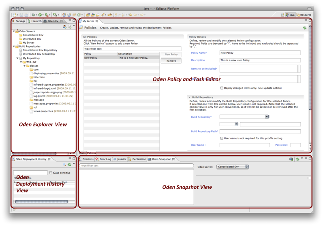
Oden Explorer View
Oden Explorer View는 배포 환경 구성을 위한 Server와 Repository를 구성 할 수 있고 Task와 Policy 을 편집 할 수 있는 Editor 창으로 접근이 가능하다.
- Oden Explorer View 열기
Eclipse 메뉴를 통해 Window > Show View > Other… > Anyframe > Oden Explorer
Figure 5-2 Open the Oden Explorer View
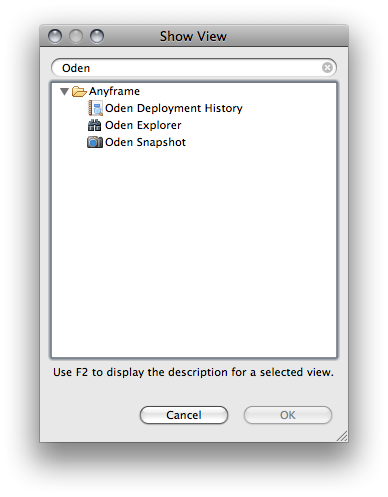
- Oden Explorer View 구성
Oden Explorer View는 크게 Oden Servers와 Build Repositories로 구성 되어 있으며 Oden Server 및 Build Repository 등에 대한 연결 프로파일을 대화창을 통해 관리할 수 있다. 관리할 수 있는 기능은 각 프로파일에 대한 신규 생성, 편집, 복제, 삭제 등이다.
Figure 5-3 Oden Explorer View
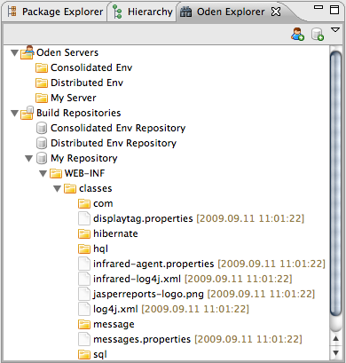
Servers
Oden을 활용한 배포환경 구성 시 설치한 Oden Server의 프로파일을 관리한다. 하나의 Oden Server에 대해서도 관리의 편의를 위해 여러개의 프로파일을 만들 수 있다.
Managing Oden Server Profiles
Context Menu를 통해 Oden Server의 프로파일을 관리하며 메뉴는 다음과 같다.
- New Oden Server Profile...
"Oden Severs" 항목에서 호출한 Context Menu를 통해, Oden Server 프로파일을 새로 만들 수 있음
- Edit Oden Server Profile...
생성한 Oden Server 프로파일에 대한 편집 기능을 제공함
- Duplicate Oden Server Profile...
생성한 Oden Server 프로파일에 대한 복제 기능을 제공함. 기본적으로 "[기존 Oden Server 프로파일 이름] - duplicated"의 이름이 부여되며, 그 외 정보는 기존 정보를 바탕으로 기본값으로 설정됨
- Delete Oden Server Profile...
생성한 Oden Server 프로파일에 대한 삭제 기능을 제공함. 해당 프로파일을 통해 "Oden Policy and Task Editor"가 열려 있을 경우, 해당 Editor를 닫음
Figure 5-4 Create a New Oden Server Profile
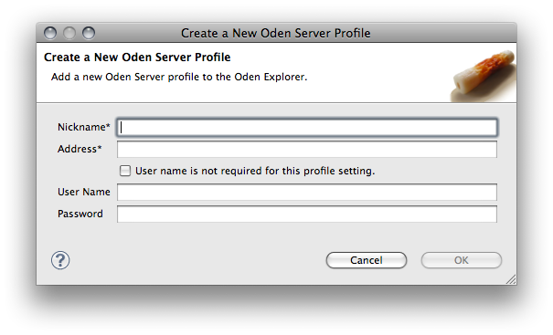
Server를 생성하기 위한 정보들은 아래와 같다.
- Nickname : 생성하는 Server의 별칭을 입력한다.
- Address : Oden Server가 설치된 곳의 hostname 또는 IP 주소를 포트 번호를 포함하여 입력한다. eg. localhost:9860
- User name is not required for this profile setting. : Oden Sever에 접근 시 인증 과정이 필요 없을 경우 체크한다.
- User Name : 계정이 필요한 경우 아이디를 입력한다.
- Password : 계정이 필요한 경우 암호를 입력한다.
Note: Oden Server 프로파일에 대한 변경이 있을 경우, Oden Explorer View가 갱신되면서 기존에 열려있던 Build Repository의 하위 폴더들이 닫히게 된다.
Build Repositories
Build Repository는 CTIP 환경에서 CI서버(빌드서버)에서 Build 결과물이 생성되는 위치를 지칭하며 이에 대한 프로파일은 업무별 또는 용도에 따라 여럿을 설정 할 수 있다. Eclipse Plug-in에서는 Build Repository 프로파일을 설정하여 사용자가 직관적으로 배포가 가능하도록 한다.
Managing Build Repository Profiles
Context Menu를 통해 Build Repository의 프로파일을 관리하며 메뉴는 다음과 같다.
- New Build Repository Profile...
"Build Repositories" 항목에서 호출한 Context Menu를 통해, Build Repository 프로파일을 새로 만들 수 있음
- Edit Build Repository Profile...
생성한 Build Repository 프로파일에 대한 편집 기능을 제공함
- Duplicate Build Repository Profile...
생성한 Build Repository 프로파일에 대한 복제 기능을 제공함. 기본적으로 "[기존 Build Repository 프로파일 이름– duplicated"의 이름이 부여되며, 그 외 정보는 기존 정보를 바탕으로 기본값으로 설정됨
- Delete Build Repository Profile...
생성한 Build Repository 프로파일에 대한 삭제 기능을 제공함
Figure 5-5 Create a New Build Repository Profile
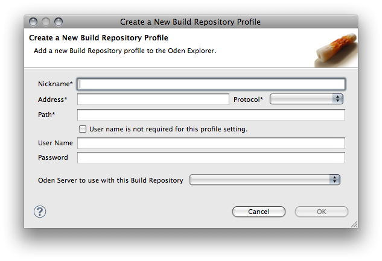
Build Repository를 생성하기 위한 정보들은 아래와 같다.
- Nickname : 생성하는 Build Repository의 별칭을 입력한다.
- Address : Host name 또는 IP 주소를 입력한다. eg. localhost,127.0.0.1
- Protocol : Build Repository로 접근하기 위한 Protocol을 선택한다.
- Path : Build Repositoryd의 root path를 입력한다.
- User name is not required for this profile setting : Sever에 접근 시 계정이 필요 없을 경우 체크한다.
- User Name : 계정이 필요한 경우 아이디를 입력한다.
- Password : 계정이 필요한 경우 암호를 입력한다.
- Oden Server to use with this Build Repository : Build Repository를 사용하는 Oden Server를 선택한다.
Note: Build Repository 프로파일에 대한 변경이 있을 경우, Oden Explorer View가 갱신되면서 기존에 열려있던 Build Repository의 하위 폴더들이 닫히게 된다.
Deploy Now Action
Deploy Now는 Build Repository 트리 구조에서 사용자가 원하는 폴더 및 파일을 선택하고 마우스 우 클릭을 통한 context menu를 이용해 쉽게 배포를 수행 하는 기능이다.
Figure 5-6 Deploy Now Action
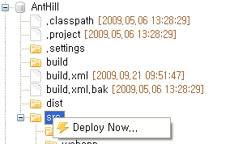
Deploy Now...를 선택하면 배포 될 파일 목록을 미리보기를 통해 확인 할 수 있다.
Warning: Deploy Now 기능은 update 기능을 제공하지 않아 모든 Item들을 배포 하므로 기능 수행에 관하여 주의를 요한다.
배포 목록을 확인하고 OK 버튼을 클릭하면 Agent로 배포를 수행하고 보여주는 정보는 다음과 같다.
- Repository : 선택한 Build Repository의 root path
- Path : 선택한 Build Repository의 root path 이후의 Item path
- Item : 배포되는 파일의 이름
- Agent : 배포 되는 config.xml 상의 Agent 별칭
Figure 5-7 Confirm Deployment Preview
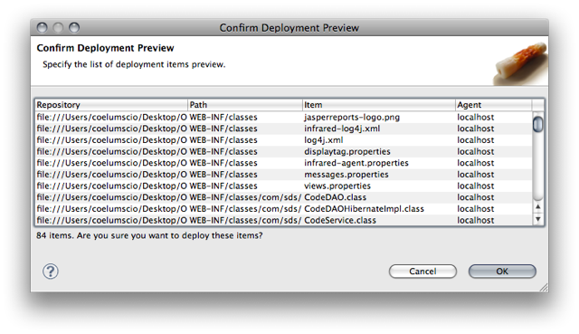
Oden Policy and Task Editor
Policy(배포정책)는 배포를 수행 할 수 있는 단위를 말하며, 배포서버에 관한 정보, 배포 시 포함 할 경로 및 파일. 제외 할 경로 및 파일, 배포서버에 관한 정보를 포함한다. 또한 Task(배포작업)는 정의된 Policy들의 묶음 이며 실질적으로 배포를 수행 하는 구조체 이다.
Oden Policy and Task Editor는 Policy 및 Task에 대해 조회, 생성, 삭제, 편집등을 수행하는 Editor 창이다. Editor에 접근 하기 위해서는 원하는 Oden Server 프로파일의 Context Menu에서 "Open Oden Policy and Task Editor..."를 선택하여 Editor를 연다.
Figure 5-8 Open Oden Policy and Task Editor
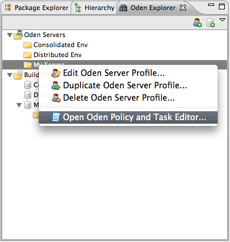
Policies Tab
Policies Tab은 All Policies, Policy Details, Build Repository, Agents 등으로 구성되며 상세 기능 설명은 다음과 같다.
- All Policies
Sever에 등록되어 있는 Policy 목록을 보여주며 filter text를 통해 Policy 조회를 수행 할 수 있고 New Policy 버튼 클릭을 통해 신규 Policy를 입력하며, Remove를 통해 생성되어 있는 Policy를 제거한다.필요시 오른쪽 상단의 refresh 버튼을 클릭하여 최신 Policy 목록을 조회한다.
- Policy Details
Policy에 관한 일반적인 사항을 입력, 편집, 조회 하는 창이며 필드의 상세내용은 다음과 같다.
Table 5-1 Policy Details Fields
필드 |
설명 |
비고 |
Policy Name |
입력하는 Policy의 이름 |
중복 Policy Name 입력불가 |
Description |
입력하는 Policy에 대한 설명 |
|
Items to be Included |
Build Repository Path 이후에 포함할 아이템 (경로 및 파일) |
입력 필드의 구분은 “;”로 구분
* : 1레벨 하위 모든 것 ** : 하위 레벨모든 것
eg. webapp/**;webapp/WEB-INF/lib/* |
Items to be Excluded |
Build Repository Path 이후에 제외할 아이템 (경로 및 파일) |
Items to be include 필드와 입력형태 동일함 |
Deploy changed items only. |
변경 파일만 배포를 원할 경우 체크 |
Update 옵션 |
Figure 5-9 Policy Detail
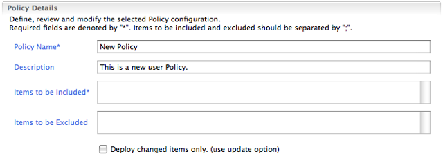
- Build Repository
Build Repository의 정보를 입력하며 Oden Explorer View에 등록한 Build Repositories를 선택하여 정보를 로딩하여 입력하거나 “User Input” 를 선택하여 직접 입력이 가능하다.
Figure 5-10 Build Repository
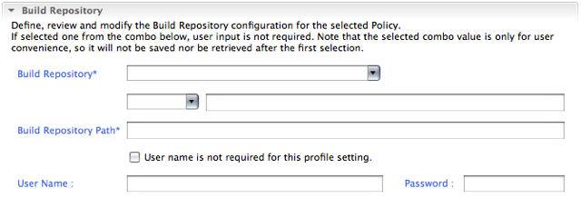
- Agents
배포되는 Agent를 등록하며 Add… 버튼을 클릭하고 대화창을 통해 추가한다. 또한 필요시 Agent를 선택하고 Remove 버튼을 클릭하여 제거한다.
Figure 5-11 Select Agents
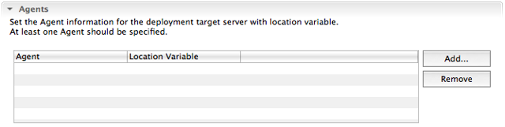
conf/config.xml 에 설정되어 있는 Agent 및 Location Variable을 선택하고 OK 버튼을 클릭하여 Agent 테이블로 추가한다. 원하는 Agent, Location Variable을 선택하면 하단에 배포 서버의 URL 및 배포경로를 제공한다.
Figure 5-12 Select the deployment target agents Dialog
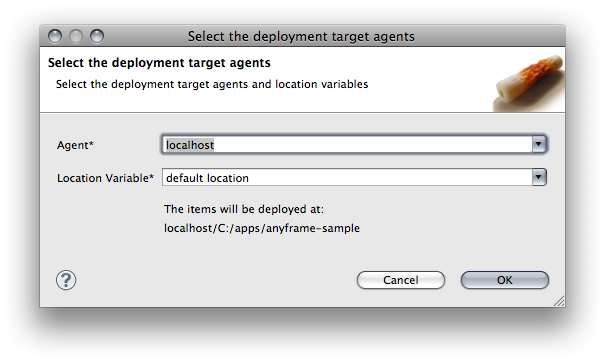
Adding a New Policy
New Policy를 클릭하여 신규 Policy를 등록한다. 신규 Policy 입력 시에 임시 Policy Name 과 Description이 자동 입력되며 원하는 값으로 변경하여 입력하면 된다.
Warning: 임시 Policy Name은 사용자가 원하는 이름으로 반드시 변경하여야 한다.
Editing an Existing Policy
All Policies 테이블에서 원하는 Policy를 클릭 후, Policy Details, Build Repository, Agents 의 값들이 조회가 되며 원하는 값으로 편집을 하고 Save this Policy를 클릭한다.
Deleting a Policy
All Policies 테이블에서 원하는 Policy를 선택 후, Remove를 클릭한다. 확인창을 통해 다시 한 번 고려할 수 있으며, 삭제된 Policy는 복구가 불가능하다.
Tasks Tab
All Tasks, Task Details, Policies 등으로 구성되며, 상세 기능 설명은 다음과 같다.
- All Tasks
Sever에 등록되어 있는 Task 목록을 보여주며 filter text를 통해 Task Name 조회를 수행 할 수 있고 New Task 버튼 클릭을 통해 신규 Task를 입력하며, Remove를 통해 생성되어 있는 Task를 제거한다. 필요 시 오른쪽 상단의 refresh 버튼을 클릭하여 최신 Task 목록을 조회한다.
- Task Details
Task에 관한 일반적인 사항을 입력, 편집, 조회 할 수 있다. TaskName은 입력하는 Task의 이름, Description은 입력하는 Task의 개요를 나타낸다.
- Policies
Task에 포함될 Policy를 체크를 통해 포함 시킨다. 필요 시 오른쪽 상단의 refresh 버튼을 클릭하여 최신 Policy 목록을 조회한다.
입력 혹은 편집 정보는 Save this Task 버튼을 클릭하여야 저장된다.
Adding a New Task
New Task를 클릭하여 신규 Task를 등록한다. 신규 Task 입력 시에 임시 Task Name 과 Description이 자동 입력되며 원하는 값으로 변경하여 입력하면 된다.
Warning: 임시 Task Name은 사용자가 원하는 이름으로 반드시 변경하여야 한다.
Editing an Existing Task
All Tasks에서 원하는 Task를 클릭 후, Task Details, Policies 등의 값들을 편집하고 Save this Task를 클릭한다.
Deleting a Task
All Tasks에서 원하는 Task를 선택 후 Remove를 클릭한다. 확인창을 통해 다시 한 번 고려할 수 있으며, 삭제된 Task는 복구가 불가능하다.
Running a Task
All Tasks에서 배포를 수행하고자 하는 Task를 선택 후 Run this Task를 클릭하면 배포 될 파일 목록을 미리보기를 통해 확인 할 수 있고 OK 버튼을 클릭하면 Agent로 배포를 수행한다.
Figure 5-13 Preview
Oden Snapshot View
Snapshot View에서는 Snapshot Plan과 Snapshot을 관리할 수 있다. Plan은 Snapshot을 생성하고자 하는 디렉토리의 정보를 담고 있으며,
또한 Snapshot이 저장될 위치 역시 포함하고 있다.
Snapshot View에 관한 설명은 다음과 같다.
- Oden Server : Oden Server를 선택할 수 있다. View를 처음 시작하면 목록의 첫번째 Oden Server를 선택한 상태가 된다.
- Snapshot Plan and Snapshot Tree : Oden Server를 선택했을 경우, 그에 해당하는 Snapshot Plan과 Snapshot으로 이루어진 tree가 나타난다.
- Details : Tree 중에서 Snapshot Plan이나 Snapshot을 선택했을 경우, 각각의 상세정보가 나타난다.
만약 Oden Server가 연결될 수 없다면, Error Log를 통해 Oden Server에 연결할 수 없다는 메시지가 나타난다.
Toolbar에 있는 Refresh 버튼을 통해 Oden Server의 목록과 선택된 Oden Server의 Snapshot Plan, Snapshot 구조가 Refresh되어 update된 내용을 얻어올 수 있다.
Managing Snapshot Plans
Snapshot Plan은 Snapshot 대상 디렉토리, Agent, 저장 디렉토리의 정보를 담고 있다. Snapshot은 Snapshot Plan을 통해서만 생성이 가능하다.
Adding a New Snapshot Plan
Snapshot Plan은 두가지 방법으로 생성이 가능하다.
- Toolbar에 있는 버튼을 통해 Snapshot Add Dialog를 열 수 있다.
- Tree 위치에서 Context Menu를 통해서 Snapshot Add Dialog를 열 수 있다.
Figure 5-14 Add a new Snapshot Plan
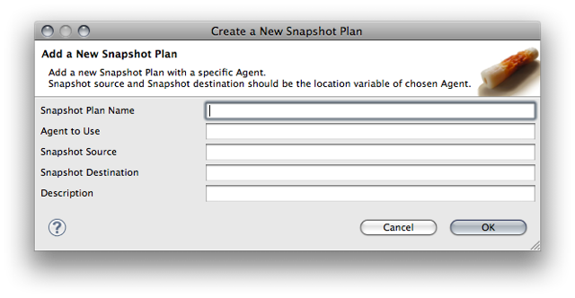
만약, Oden Server가 연결되어 있지 않은 상태에서 Snapshot Plan을 Add 하려고 하면, Error Log에 Oden Server에 연결할 수 없다는 메시지가 나타나게 된다.
위 다이얼로그를 통해 새로운 Plan을 생성할 수도 있고, 기존에 있던 Plan을 update할 수도 있다.
- Snapshot Plan Name : Plan을 식별할 수 있는 이름
- Agent to Use : Snapshot을 만들 대상 디렉토리, 저장할 디렉토리가 저장된 변수들을 가지고 있는 Agent
- Snapshot Source : Snapshot을 만들 대상 디렉토리가 저장된 변수명
- Snapshot Destination : 생성된 Snapshot을 저장할 디렉토리가 저장된 변수명
- Description : 기타 정보
정상적으로 Snapshot Plan이 저장되면, View에는 다음과 같이 나타나게 된다. Plan을 선택했을 경우, 상세 정보가 나타나게 되는데,
여기에 Snapshot Plan에 관한 정보가 추가되어 보여진다.
- User Information : Snapshot Plan을 생성한 위치의 IP가 나타난다.
- Date : Snapshot Plan을 생성한 날짜, 시간이 YYYY/MM/DD hh:mm:ss 형태로 나타난다.
Editing an Existing Snapshot Plan
Warning: Snapshot Plan의 내용을 수정하게 되면, 해당 Plan을 바탕으로 생성된 Snapshot이 모두 삭제된다.
Duplicating an Existing Snapshot Plan
기존에 생성된 Snapshot Plan과 동일한 환경을 가지는 Plan을 생성하기 위해서는 Add 버튼을 통해 새로 생성하는 방법과, duplicate 메뉴를 사용하는 방법이 있다.
마우스 우클릭을 통해 Duplicate Snapshot Plan 메뉴를 클릭하게 되면, Snapshot Duplicate Dialog가 나타난다.
Snapshot Name은 기존의 Plan명에 -duplicate만 추가되었으며, 나머지 정보들은 동일하다. 그대로 사용해도 되고, 수정해서 사용해도 된다.
Deleting a Snapshot Plan
Warning: Snapshot Plan의 내용을 삭제하게 되면, 해당 Plan을 바탕으로 생성된 Snapshot이 모두 삭제된다.
Managing Snapshots
Snapshot은 Snapshot Plan의 정보를 토대로 Backup을 수행한 결과로 나타나는 File이다.
Taking a Snapshot
Snapshot Plan을 토대로 Snapshot을 생성하기 위해서는 Take Snapshot 버튼을 클릭한다.
Snapshot을 생성하기 위해 선택한 Snapshot Plan이 맞는지 확인 후, Snapshot을 생성하게 된다.
Snapshot은 Source 디렉토리 하위의 모든 폴더, 파일등을 .zip으로 묶은 후, 확장자 없이 Destination에 저장된다.
Snapshot을 생성하고 난 뒤에는 Tree 위치에서 Snapshot을 확인할 수 있다.
Snapshot의 상세 정보는 다음과 같다.
- Snapshot File Name : Snapshot의 이름으로 '생성일_번호'의 형태로 저장된다.
- Size : Snapshot의 size로 KB단위로 나타난다
- Date : Snapshot을 생성한 날짜, 시간이 YYYY/MM/DD hh:mm:ss 형태로 나타난다.
Deleting a Snapshot
생성한 Snapshot을 삭제하기 위해서 Delete 버튼을 클릭하게 되면, 선택한 Snapshot에 대해서
삭제 확인 메시지가 나타나게 된다.
Rollback with Snapshots
생성된 Snapshot을 통해 특정 시점으로 데이터를 돌리고자 할 때, Rollback 기능을 사용할 수 있다.
원하는 Snapshot을 클릭한 후 Rollback 버튼을 클릭하면 확인을 요청하는 창이 나타나고, Rollback을 수행할 수 있다.
Oden Deployment History View
Oden Deployment History View는 사용자들이 원하는 배포 Item을 검색하고 조회 할 수 있는 기능을 제공한다. Oden Deployment History View는 다음과 같은 방법으로 접근한다.
- Oden Deployment History View 열기
Eclipse 메뉴를 통해 Window > Show View > Other… > Anyframe > Oden Deployment History
Searching Deployment History
Oden Deployment History View 구성은 다음과 같다.
- 검색창 : 검색창에 검색을 원하는 Item의 이름을 입력한 후 엔터를 누르면 해당하는 배포 목록이 검색되며, 빈칸인 채로 검색을 실시하면 최신 배포 목록이 검색된다.Oden Deployment History View의 검색범위는 모든 사용자의 배포이력이다.
- Server 선택 콤보 박스 : 사용자가 원하는 서버를 선택 할 수 있으며 Oden Explorer View 에서 생성한 Oden Servers의 별칭이 자동으로 구성되어 선택 할 수 있다
- Refresh 버튼 : Oden Explorer View 상에서 Servers의 내용의 변경이 있을 경우 최신 정보를 얻어 오기 위해 사용한다.
- 검색 결과창 : 검색 결과는 Oden Deployment History View의 하단 검색 결과창에 나타난다.
Advanced Search
고급검색기능은 Advanced Search 버튼을 클릭하여 실행시킬 수 있으며, 다양한 검색조건을 AND 조건으로 조합하여 검색할 수 있다.고급검색기능을 통하여 조합할 수 있는 검색조건은 다음과 같다.
Figure 5-15 Advanced Search
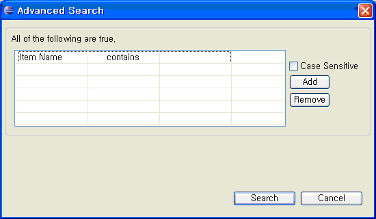
- Item Name: 배포 파일 이름에 대하여 해당 문자열을 기준으로 검색한다.
- IP: 배포를 수행한 IP에 대하여 검색한다.
- Deployed Date: 배포를 수행한 시점에 대하여 이전, 이후 등의 기준으로 검색한다.